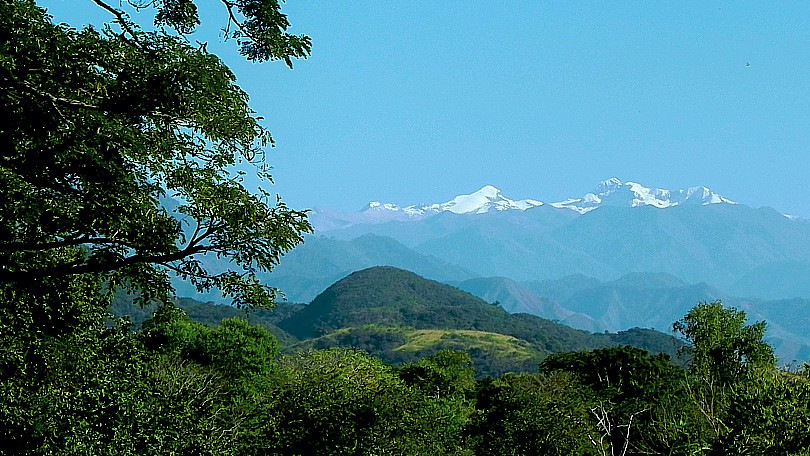
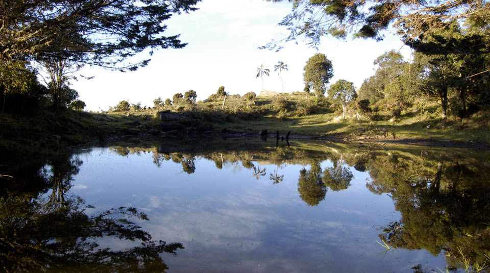
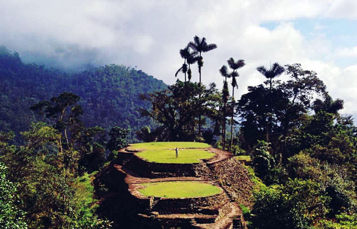
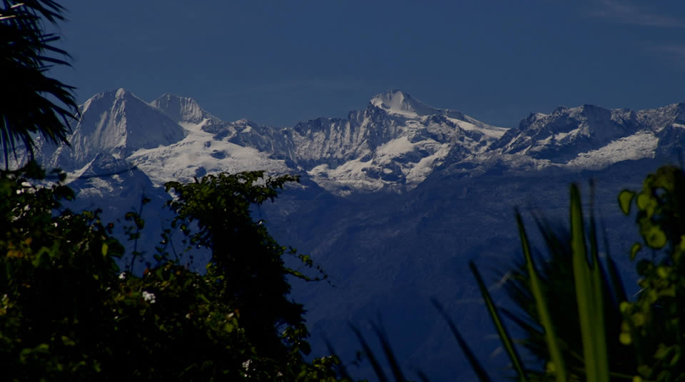

|

|

|
|

|

|
Sierra nevada
santa Marta- Colombia
Sierra nevada de Santa Marta
La Sierra Nevada de Santa Marta es el sistema montañoso litoral más alto de Colombia
Ubicado al norte de Colombia constituye por sí mismo un sistema aislado de Los Andes, sobre la costa Caribe de Colombia. Esta se eleva abruptamente desde las costas del Mar Caribe hasta alcanzar picos nevados a una altura de 5.775 msnm, si bien datos provistos por la misión SRTM señalan una altitud menor, cercana a los 5.700 msnm.1
turismo colombia Sierra nevada
Informacion turistica sobre colombia
Con una superficie aproximada de 17.000 km², se encuentra separada de la cordillera de Los Andes por el sistema de valles que forman los ríos Cesar y Ranchería. Su pico más alto es el Pico Cristóbal Colón, que es de paso la montaña más alta de Colombia, además, la Sierra Nevada una de las cadenas costeras más altas del mundo separadas de una cadena montañosa como los Andes y como macizo montañoso, siendo 250 metros más corta que las montañas Saint Elias en Canadá. La Sierra Nevada de Santa Marta hace parte del Parque nacional natural Sierra Nevada de Santa Marta y del Parque nacional natural Tayrona, los cuales son administrados por el Ministerio del Medio Ambiente. Se encuentra ubicada aproximadamente a 10°52' Norte y a 73°43' Oeste (posición de sus picos centrales), repartida entre los departamentos de Magdalena, La Guajira y el Cesar, en el Caribe colombiano. Por ser una montaña de más de 5.000 metros de altura, desde el cálido seco hasta el de nieves perpetuas. Asimismo el clima de toda la región está determinado por los vientos alisios y por la elevación con respecto al nivel del mar. Es por ello que la temperatura va de 30 °C en la parte baja del parque hasta los 0 °C en los picos más altos de la Sierra. La UNESCO la declaró Reserva de la Biosfera en 1979, dada la red de ecosistemas que albergan innumerables formas de vida y que son hogar de varias comunidades indígenas.
Comentarios
 Carlos arturo
Carlos arturo
 Maria Eugenia
Maria Eugenia
Informacion del Autor

Mi nombre es José Alberto Gonzalez Hernandez,licenciado en Educación y Especializado en administración de la informatica educativa,Super interesado en los cursos de nextu que me han servido enormemente en mi actividad profesional, y como herramientas para mi trabajo en actividades netamente academicas.
ac_unit